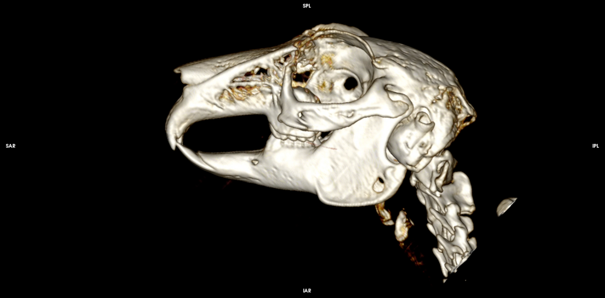
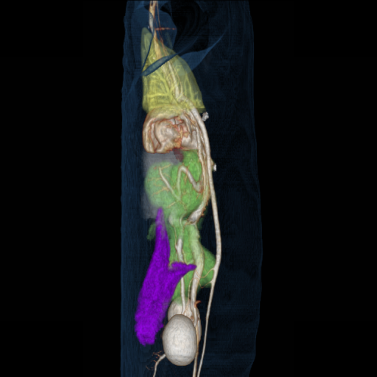
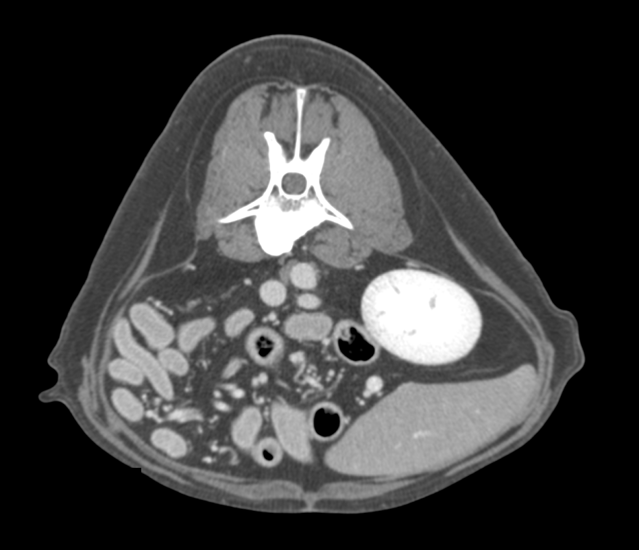
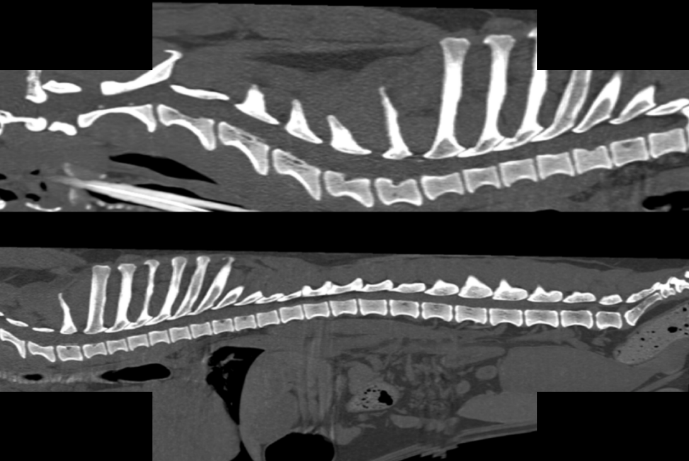
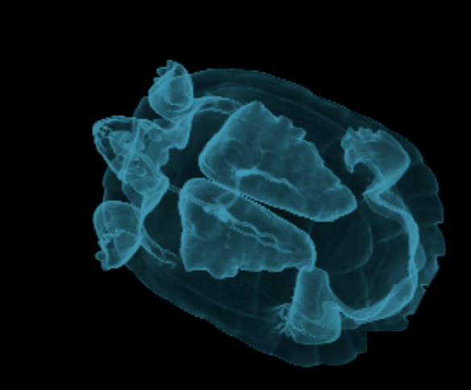
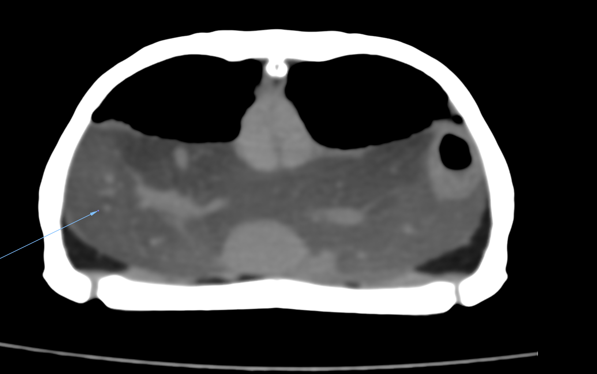
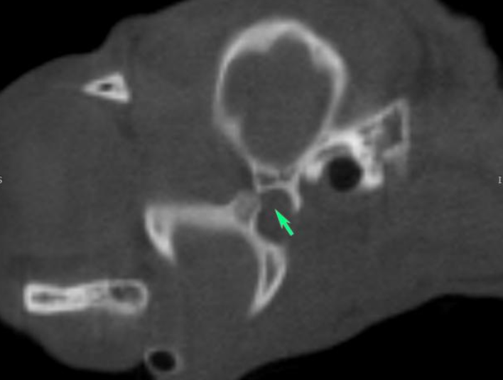

CT

CTHead study
CatThin-slice CT of the cranium and sinonasal, orbital and intracranial structures.
CT

CTDiaphragmatic pericardial hernia (3D)
DogVolume-rendered 3D reconstruction delineating herniation of abdominal viscera into the pericardial sac.
CT

CTAbdominal study (contrast-enhanced)
CatContrast-enhanced cross-sectional imaging of the abdominal organs.
CT

CTSpine study
DogHigh-resolution imaging of the vertebral column and spinal canal.
CT
 CT
CT
CT
3D reconstruction
HedgehogVolume-rendered 3D reconstruction of the hedgehog’s skeletal and integumentary anatomy.
CT

CTLung study (3D reconstruction)
Turtle3D reconstruction of pulmonary anatomy within the carapace.
CT

CTFatty liver (hepatic lipidosis)
TurtleDiffuse low-attenuation of the hepatic parenchyma on transverse CT, consistent with hepatic lipidosis.
CT

CTTemporomandibular joint luxation
CatTransverse CT showing rostral luxation of the mandibular condyle with an empty glenoid fossa.